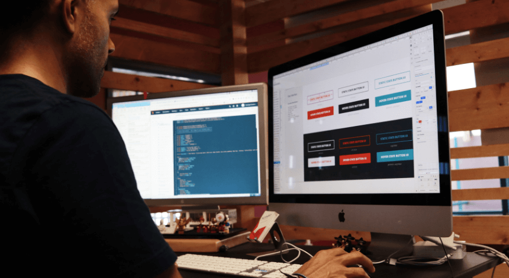

We help you to Design & build a custom website
We can help you build or modify a business website, and also make sure it’s mobile-optimized to work seamlessly on smartphones and tablets.
Content & copywriting
Custom content is essential not only for personifying your business but also for boosting SEO (Search Engine Optimization). This will help you to have original, compelling content and photos to help grow your business and attract new clients.
Search Engine Optimization (SEO)
"SEO will help your website rank on the first page of search engines. This is important because potential customers searching for your services will most likely go with a business that pops up in the top 10.
Social media marketing
"A lot of people love social media, this helps business to grow their brands and build their customer base. A social media marketer can help organize content and create posts that embody the values of your business. We know it is not easy to run a business, we will post every day at the appropriate time when your accounts will get the most engagement. Clients can also share your website on their pages which can help grow your business.